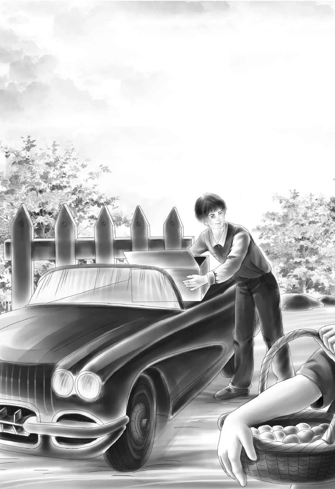
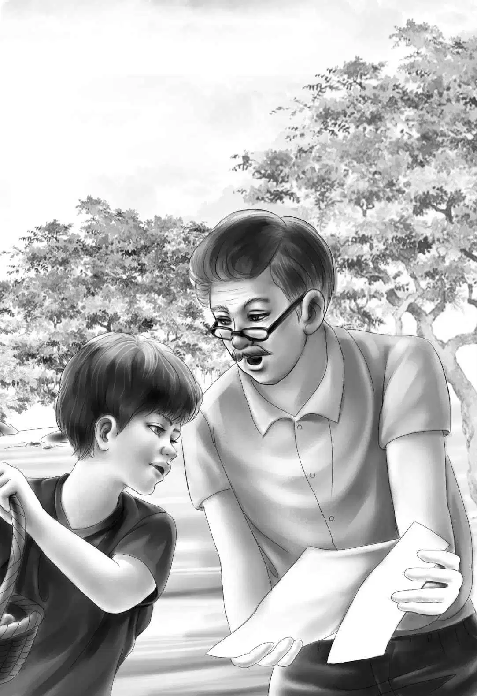

Chapter 14 Best Trip of All
列车确实在海狸湖停了一小会儿。
从潘德尔到海狸湖的路上，班尼说：“你就要见到海狸先生了，我真替你们高兴。自从警察把你逼走以后，他一直生气得很呐。”
“是的，他准会替我抱不平的。”瘦子说，“他虽然不知道我的衣服里缝了那么多钱，却知道我从来没有偷过任何东西。对了，你们是在哪里找到钻石项链的？”
“在上铺的黑色床垫里。”亨利说。
“哦！”瘦子仔细地想了想，点了点头，“没错，琪琪经常在那里睡觉。你知道，老板的妻子身份高些，所以一直睡在下铺，不过她也十分想念琪琪。”
海狸湖到了，列车慢了下来，瘦子已经做好了下车的准备。
“我走了。”他说，“以后我每周都要骑车来看海狸先生。他仍然是我最好的朋友。”
奥登一家望着他把摩托车推下去，列车再次启动。
杰西说：“哈，两个好朋友又团聚了，真让人高兴！咱们这下什么都不用担心了！”
列车哐啷啷地行驶着，一刻没有停留，而奥登一家的聊天也一刻没停过。他们兴奋地谈论着自己新交的朋友，还有这一系列的冒险……
“这次又是你解开了谜团，班尼！”亨利说。
“其实我事先也不知道。”班尼说，“要是杰西没有缝床垫，谁都破解不了。”
班尼沉默了一会儿，又叫了起来：“啊，我刚刚想到一件事！如果我们跟爷爷的朋友要求换新床垫，那我们就永远找不到钻石项链了！”
“说得不错，班尼。”亨利说，“其他人也永远找不到它了。”
奥登先生同意道：“那么，项链肯定会被永远地埋藏下去。现在，我们是不是该收拾行李了？”
“其实我并不想收拾行李。”班尼说，“我们能一直坐在尾车里，永远旅行下去吗？”
“当然不可以啊。”奥登先生说，“我必须回去工作啦！我还要飞往纽约，第一件事就是把钻石项链卖掉。”
第二天一早，列车放慢了速度，开进了货站——这是最后一站，也是奥登一家开始他们尾车历险的地方。大家都来到尾车的看台上，等着下车。列车停住了。
班尼喊道：“看啊，约翰·卡特先生来接我们了，老爷车就停在那儿！”
约翰·卡特帮爷爷做过很多事儿。走下车厢时，大伙儿都兴奋地打着招呼：“你好啊，卡特先生！”
“看到你们回来，我真高兴。”他大声回应道，“不过还有一个小家伙也很高兴，看看他是谁。”
卡特先生拉开车门，顿时，望望跳了出来。它跑到杰西跟前，逐个问候着家人，蹦跶着，欢叫着。大伙儿都轻轻地拍了拍它。
车组人员全都走出来，帮他们把行李搬下火车，卡特先生和亨利把它们装进了车里。
阿尔说：“你们什么时候还可以再次光临呢？你们实在是最棒的乘客啦！”
卡尔先生也说：“你们能乘坐我们的列车，是我们的荣幸！”
“这话正是我想说的！”戴维斯先生说，“这次旅行真是令人兴奋！”
奥登一家挤进了老爷车，挥了挥手，直到车组人员消失在视线里。亨利把车子开到家门口，开始卸行李，奥登先生则走进门，迫不及待地拆着邮件。
他大声说：“这儿有一封信，是寄给我们大家的。是查理寄来的明信片，他说他非常喜欢那把刀。”
“给我看看！”班尼说，“没错，这上面是玻璃厂老车站的图片。我永远忘不了那个地方。”
一会儿之后，奥登一家坐下来，开始吃晚饭了。
“我要准备两件干净的衣服，”爷爷说，“明天就去纽约。”
“明天？”杰西说，“可您才到家啊！”
“我知道。”奥登先生说，“不过我想尽快把项链卖掉，把钱寄给曹曹。”
“我理解，爷爷。”亨利说，“您想把这件挂心的事情早点解决掉。”
爷爷当天便从纽约赶了回来。
“哦，幸亏我去得及时。”他对大家说，“一个珠宝商出了个很好的价钱，买走了钻石，而他给那颗红宝石开出的价钱，居然是我预期的两倍，他说那块宝石非常精美，他可以轻易地卖出去。”说到这儿，爷爷笑了起来，“这样一来，曹曹也就不用担心了。”


一周以后，曹曹亲自寄了封信过来，里面有曹曹坐在卡车里的照片，卡车后面还拖着一个带顶的马棚，少校正朝窗外张望着。
“这是少校的小房子。”班尼说，“我一直希望它的小家可以有顶棚遮雨。我好想跟他们去南方啊，杰西。”
“我们这阵子走的地方也不少了，”杰西说，“但还没有哪次是玩得最尽兴的！”
“我想，这次的尾车冒险，可能是我们最刺激的一次了。”维莉说。
大家全都表示同意。
如果小北铁路也能言语的话，它也会说：“这是我这辈子里最棒的一次旅行——尽管我以前也曾护送过那辆刷着白漆、涂着金色数字777的车厢。”